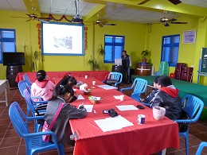
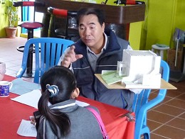
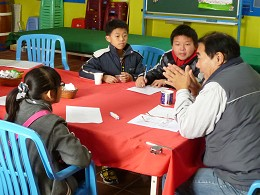

For further understanding of the owning of White Horse Farm. Here is what we interviewed that day.
| It’s rare to do horses farming in Taiwan. Why do you own the horse farm? |
It’s once rumored that there would be horse racing in Taiwan. That is because one can earn more money from horse racing than farm owning. I hoped that I could gain lots of money from it, too. Hence, I set up the Lin’s Horse Farm in 1988, and. However, the government hadn’t allowed Taiwanese to do horse racing. In spite of that, I don’t shut down my farm. I'm interested in horses farming, so I keep owning the farm.
|
| What conditions are needed to keep a horse farm? |
According to the provisions of the law, farm owners who breed over 20 horses must register horse farms. The scale of White Horse Farm was bigger before, so there is a farm license. Besides, it comes with conditions to own a farm, such as land, experience, money, and interests.
|
| Where do you buy those horses? |
The big horses are from abroad, while the small ones, Bony, are hybrids from local horses. You know what! I can deliver small, healthy horses!
|
| In addition to horses farming, there are preserved duck egg making, and wine making in your horse farm. How did you learn those skills? |
As for how to breeding horses is from my early experience. Also, when I had other confusing questions about horses, I would ask for Professor Mau of the College of Agriculture and Natural Resources in National Chung Hsing University in Taichung. Concerning wine making, I had studied Chemistry. Therefore, this is understandable for me to understand the process of wine making. In order to having better skills, I also joined some courses about wine making in National Pingtung University of Science and Technology, and Chung Hsing University. The last part is preserved duck egg making. It is also related to some chemical reaction, so it is what I am studying now.
|
| Why do you use the name “White Horse Farm”? Are there special meanings of “White Horse?” |
Trace back to 1972, there were a lot of residents doing duck farming as a sideline. In their heydays, the number of the ducks could reach one million, so Hsienhsi Township was named “the Kingdom of Duck eggs.” Nevertheless, the water pollution got worse and worse, and brought duck farming to an end. Later on, I owned a horse farm instead. However, due to the horse racing problem I mentioned in question one, it’s crucial to transform the industry.
At that time, the 921 earthquake occurred, so no visitors came to mountains. It’s an opportunity for my horse farm that is near the coast. I developed the horse farm into leisure farm. First, there were horses riding and salted eggs DIY. Not until Taiwan joined World Trade Organization, the government allowed to domestic wine making. So, wine farms were hottest then. I’d got a wine farm license and built White Horse Farm in 2002. In my fusion farm, there were a variety of products, and activities.
With regard to the name of my farm, I had the name called White horse because it’s better than Black Horse. Moreover, a fortune teller told me that White Horse was good, and easier to memory.
|
| Why did you decide to build the farm in the Mediterranean style? |
With a unique and pretty building, the leisure farm can attract many visitors. Furthermore, the building in the Mediterranean style is solid enough to resist the strong wind in Hsienhsi. To design it, I spent much time consulting several books, and finally figured out the ideal type.
|
| What impressed you most within your farm-owning life? |
I lead a retiring life now. Basically, I do have many earnings, but what impressed me most is not things, but feelings. I make various friends here, and I enjoy the feelings of chatting with visitors.
|
| What difficulties do you confront in owning the farm? How to conquer them? |
The most difficult is that when it is necessary, you need to transform the industry. How to transform is really difficult! For example, duck farming got trouble with serious water pollution, horse farming got trouble with laws, and even wine making got trouble with drunk driving. Probably, Leisure Farm will be out of fashion one day. Therefore, there will be another transformation. In my opinion, it’s better to follow the trends. Perhaps, tourism factory is a good idea.
|
| Do you have other thoughts about running this farm? |
I managed to make visitors balance off the entrance fees so that it can attract more people. Besides, some visitors suggest us to provide meals, but due to deficiency of staff, the service can’t work. Also, I am leading a retiring life, so I just do what I can do.
|
| Is there in-season or off-season in the farm? |
Yes, there is. In winter, more people drink wine, so for wine making, the winter is better season. Nevertheless, the leisure farm is off-seasons in winter because of harsh cold and strong wind from the beach. In summer, it’s just the opposite. To the farm keeper, he thinks it in optimistic way, that is, off-seasons are his rest days.
|
| How do you advertise your farm and make it well-known? |
I promote the White Horse Farm by the Internet, blogs, and various kinds of activities. Ever since it gained some popularity, I has cooperated with big company or strategic alliances, used DM to advertise it. What’s more, I will give a special discount or have some institutions enter without any fee. Obviously, the numbers of visitors get more and more.
|
| Would you like to pass down this farm, and those industries? |
Of course I desire for it. On the one hand, my daughter doesn’t want to inherit it. On the other hand, my grandson is too young to do it. Everyone has their dreams to pursue. Maybe my daughter will want to inherit the industry in the future. Who knows? Just resign myself to my fate.
|
 |
The Powerpoint slides made by the farm keeper. |
|
 |
| The farm keeper was taking the handmade model of buildings, and was explaining the building style. |
|
 |
| The farm keeper answered every question in professional manners.
|
|

▲TOP |
|